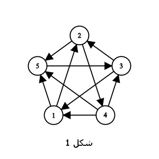
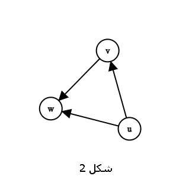
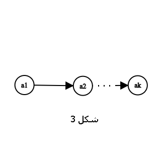

Tournament¶
Adjacency Matrix of a Tournament¶
n = 5 # Number of vertices
adjacency_matrix = [[0 for _ in range(n)] for _ in range(n)] # Initialize matrix with zeros
# Fill adjacency matrix for tournament
for i in range(n):
for j in range(i+1, n):
if random.random() > 0.5:
adjacency_matrix[i][j] = 1 # Edge from i to j
else:
adjacency_matrix[j][i] = 1 # Edge from j to i
In a tournament graph, for every pair of distinct vertices \(i\) and \(j\), exactly one of the edges \((i,j)\) or \((j,i)\) exists in the graph. The adjacency matrix of a tournament is a square matrix where:
\(a_{ij} = 1\) if there is a directed edge from vertex \(i\) to vertex \(j\)
\(a_{ij} = 0\) otherwise
with the properties: 1. \(a_{ij} + a_{ji} = 1\) for all \(i \neq j\) 2. \(a_{ii} = 0\) for all \(i\)
Generating Random Tournament¶
import random
def generate_random_tournament(n):
tournament = [[0]*n for _ in range(n)]
for i in range(n):
for j in range(i+1, n):
if random.randint(0, 1):
tournament[i][j] = 1
else:
tournament[j][i] = 1
return tournament
# Example usage
random_tournament = generate_random_tournament(5)

This algorithm generates a random tournament by independently choosing the direction of each edge with equal probability (50%). For each pair of vertices \((i, j)\) where \(i < j\), we randomly assign the edge direction using a coin flip. This process guarantees the resulting graph will satisfy the tournament property where exactly one directed edge exists between every pair of vertices.
Definition 3.2.1 (Tournament)¶
A tournament is a simple complete graph with directed edges (Figure 1 shows a tournament with 5 vertices).
{kind=link}

An \(n\) -vertex tournament can model a competition among \(n\) teams where there is a directed edge from vertex 1 to vertex 2 if and only if team 1 has defeated team 2 (as shown in Figure 1).
The King in Tournaments¶
A tournament is a complete directed graph where every pair of vertices is connected by a single directed edge. In tournaments, a king vertex is a vertex that can reach every other vertex in the graph via a path of length at most 2.
Algorithm to Find the King in a Tournament
def find_king(adj_matrix):
# Tournament adjacency matrix
n = len(adj_matrix)
king = 0
for v in range(1, n):
# if v defeats the current king
if adj_matrix[v][king] == 1:
king = v
# verify if the king is indeed a king
for v in range(n):
if v != king and adj_matrix[v][king] == 1:
# if defeated, the king is invalid
return -1
return king
Algorithm Description: The above algorithm uses a greedy approach to first identify a potential king vertex and then verifies its validity.
Definition 3.2.2 (King)¶
A king is a vertex in a tournament that has a directed path of length at most 2 to all other vertices in the tournament. For example, vertex 3 is a king in Figure 1.
Theorem 3.2.3¶
Theorem Statement: Every tournament has at least one king.
Proof: Let \(v\) be a vertex with out-degree \(\Delta^{+}\) in the tournament, i.e., a vertex with the maximum out-degree. If there exists a vertex \(u\) that cannot be reached from \(v\) via a path of length at most 2, then \(u\) must have directed edges to \(v\) and all vertices \(w\) where \((v,w) \in E\) (Figure 2). This would imply \(d^{+}(u) \geq \Delta^{+}+1\), contradicting the maximality of \(v\)'s out-degree. Hence, no such vertex \(u\) exists that is unreachable from \(v\) within at most two edges, and therefore \(v\) is a king.
{kind=link}

Theorem 3.2.3 can be interpreted as follows: in a tournament competition, there exists an individual \(v\) such that for every other individual \(u\), either \(v\) has defeated \(u\) directly or has defeated someone who defeated \(u\).
Every tournament contains a Hamiltonian path. We can prove this claim using strong induction.
Proof by induction:
Base case: For a tournament with 2 vertices, the Hamiltonian path is trivially the directed edge between them.
Inductive step: Assume every tournament with n vertices has a Hamiltonian path. Consider a tournament with n+1 vertices. Remove a vertex v, resulting in a tournament of n vertices. By the induction hypothesis, this subtournament has a Hamiltonian path, say v₁ → v₂ → ... → vₙ. Now, reinsert v and find its position in the path:
If there's an edge from v to v₁, prepend v to the path: v → v₁ → v₂ → ... → vₙ.
If there's an edge from vₙ to v, append v to the path: v₁ → v₂ → ... → vₙ → v.
Otherwise, find the smallest i where vᵢ → v and v → vᵢ₊₁, then insert v between vᵢ and vᵢ₊₁: v₁ → ... → vᵢ → v → vᵢ₊₁ → ... → vₙ.
Since tournaments are complete oriented graphs, one of these cases must hold. ∎
Example: Find a Hamiltonian path in the following tournament:

Solution: Using the inductive algorithm:
1# Tournament adjacency matrix
2# Rows: outgoing edges from vertex i
3# Columns: incoming edges to vertex j
4adjacency_matrix = [
5 [0, 1, 0, 0], # First row: edges from vertex 1
6 [0, 0, 1, 1], # Second row: edges from vertex 2
7 [1, 0, 0, 1], # Third row: edges from vertex 3
8 [1, 0, 0, 0] # Fourth row: edges from vertex 4
9]
10
11def find_hamiltonian_path(matrix):
12 n = len(matrix)
13 if n == 1:
14 return [0]
15 # Recursive step for n vertices
16 path = find_hamiltonian_path([row[:-1] for row in matrix[:-1]])
17 v = n - 1 # Last vertex index
18 # Check insertion position
19 if matrix[v][path[0]]: # Case 1: prepend
20 return [v] + path
21 if matrix[path[-1]][v]: # Case 2: append
22 return path + [v]
23 # Case 3: find intermediate position
24 for i in range(len(path)-1):
25 if matrix[path[i]][v] and matrix[v][path[i+1]]:
26 return path[:i+1] + [v] + path[i+1:]
27 return None # Shouldn't reach here for tournaments
28
29# First path: 1 2 3 4 → After inserting vertex 4:
30print(find_hamiltonian_path(adjacency_matrix)) # Output: [3, 1, 2, 4]
Definition 3.2.4 (Hamiltonian Path in a Directed Graph)¶
A Hamiltonian path in a directed graph is a directed path that traverses all vertices.
Theorem 3.2.5¶
Statement of the theorem: Every tournament contains at least one Hamiltonian path.
Proof of the theorem: Let the vertices \(a_1\) to \(a_k\) form the longest directed path in the tournament (Figure 3).
{kind=link}

If \(k = n\), the theorem is proved. Otherwise, there exists a vertex \(v\) not in this path. There cannot be a directed edge from \(v\) to \(a_1\) or from \(a_k\) to \(v\) (Why?). Thus, let \(a_i\) be the vertex with the smallest index \(i\) among all vertices from \(a_1\) to \(a_k\) such that \(v\) has an edge to it. In this case, the vertices \(a_1,...,a_{i-1},v,a_i,...,a_k\) form a path of length \(k+1\), contradicting the assumption that the longest path has length \(k\). Therefore, \(k = n\) and \(a_1\) to \(a_k\) form a Hamiltonian path.
This book is made by The Shaazzz contributors.
It is publicly available with cc-by-sa license.
Last updated at آوریل 19, 2025.
Rendered by Sphinx (4.3.2) and Minoo theme (Beta 0.9.7).